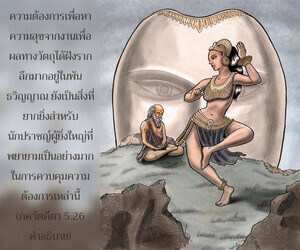
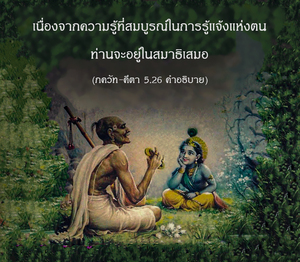
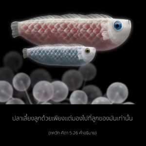

ผู้ที่ปราศจากความโกรธและความต้องการทางวัตถุทั้งหมดเป็นผู้รู้แจ้งแห่งตนมีวินัยในตนเอง และพยายามเพื่อความสมบูรณ์อยู่เสมอ จะหลุดพ้นสู่องค์ภควานภายในอนาคตอันใกล้นี้แน่นอน



ระหว่างนักบุญทั้งหลายผู้ปฏิบัติเพื่อพยายามบรรลุถึงความหลุดพ้นอยู่เสมอ ผู้อยู่ในกฺฤษฺณจิตสำนึกดีที่สุด ภาควตมฺ (4.22.39) ยืนยันความจริงนี้ ดังต่อไปนี้
ยัต-ปาทะ-ปังกะชะ-ปะลาศะ-วิลาสะ-ภักตยา
กรรมาศะยัม คระถิตัม อุทคระถะยันติ สันตะห์
ตัทวัน นะ ริกตะ-มะตะโย ยะตะโย ’ปิ รุทธะ-
โสรโต-คะณาส ตัม อะระณัม ภะชะ วาสุเทวัม
“เพียงแต่พยายามบูชา วาสุเทว บุคลิกภาพสูงสุดแห่งพระเจ้าด้วยการอุทิศตนเสียสละรับใช้ แม้แต่นักปราชญ์ผู้ยิ่งใหญ่ยังไม่สามารถควบคุมพลังอำนาจของประสาทสัมผัสได้ดีเท่ากับบุคคลที่ปฏิบัติตนด้วยความปลื้มปีติสุขทิพย์ ในการรับใช้พระบาทรูปดอกบัวขององค์ภควานฺ และถอนความต้องการที่ฝังรากลึกในกิจกรรมเพื่อผลทางวัตถุ”
ในพันธวิญญาณความต้องการเพื่อหาความสุขจากงานเพื่อผลทางวัตถุได้ฝังรากลึกมาก ซึ่งเป็นสิ่งที่ยากมาก แม้กระทั่งนักปราชญ์ผู้ยิ่งใหญ่ก็ต้องใช้ความพยายามเป็นอย่างมากในการควบคุมความต้องการเหล่านี้ สาวกขององค์ภควานฺปฏิบัติตนรับใช้ด้วยการอุทิศตนเสียสละอยู่เสมอในกฺฤษฺณจิตสำนึก มีความสมบูรณ์ในการรู้แจ้งตนเองจะได้รับความหลุดพ้นอย่างเร็วมากในองค์อภิวิญณาญ เนื่องจากความรู้ที่สมบูรณ์ในการรู้แจ้งแห่งตนท่านจึงอยู่ในสมาธิเสมอ ดังจะกล่าวตัวอย่างเปรียบเทียบดังนี้
ทรฺศน-ธฺยาน-สํสฺปรฺไศรฺ
มตฺสฺย-กูรฺม-วิหงฺคมาห์
สฺวานฺยฺ อปตฺยานิ ปุษฺณนฺติ
ตถาหมฺ อปิ ปทฺม-ช
“ด้วยการมอง การทำสมาธิ และการสัมผัสที่ปลา เต่า และนกที่ดูแลลูกๆ ของพวกมัน ในลักษณะเดียวกัน ข้าพเจ้าก็ทำเช่นนี้เหมือนกัน โอ้ ปทฺมช !”
ปลาเลี้ยงลูกด้วยเพียงแต่มองไปที่ลูกของมันเท่านั้น เต่าเลี้ยงลูกด้วยเพียงแต่ทำสมาธิ เต่าวางไข่บนดิน และตัวมันลงไปอยู่ในน้ำ ทำสมาธิที่ไข่ ลักษณะเดียวกัน สาวกในกฺฤษฺณจิตสำนึกถึงแม้อยู่ห่างไกลจากพระตำหนักขององค์ภควานฺ แต่สามารถพัฒนาตนเองให้ไปถึงพระตำหนักนั้นได้ด้วยเพียงแต่ระลึกถึงพระองค์อยู่ตลอดเวลา และด้วยการปฏิบัติในกฺฤษฺณจิตสำนึก ตัวท่านจะไม่รู้สึกเจ็บปวดในความทุกข์ทางวัตถุในระดับชีวิตเช่นนี้ เรียกว่า พฺรหฺม-นิรฺวาณ หรือปราศจากความทุกข์ทางวัตถุ เนื่องจากซึบซาบอยู่ในองค์ภควานฺเสมอ